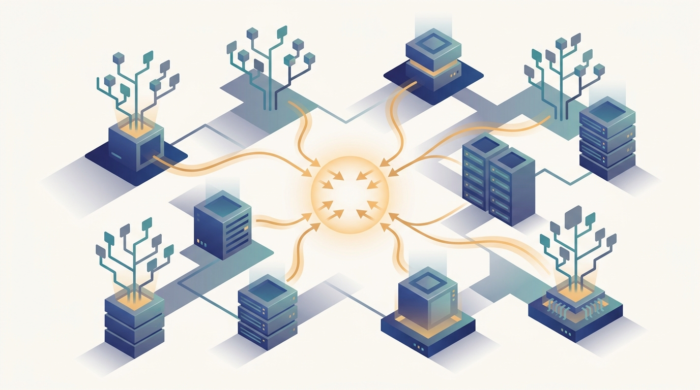

"They sent me a hundred million rows and asked for the best split. I do not hold the rows. I hold a histogram of them, gathered from forty workers who each saw a slice, and from that summary alone I must choose where the tree branches."
A Split-Finder Working Only From Aggregates
Chapters 10 and 11 built the engine of distributed learning, the data-parallel gradient and the parameter server that houses it; this chapter spends that engine on the classical algorithms that still solve most real prediction problems, and shows that each one becomes a distinct distributed-systems problem the moment its data outgrows a single machine. Classical machine learning is not a relic. On tabular data, the format of most business records, logs, and scientific tables, a gradient-boosted ensemble or a well-tuned linear model routinely beats a deep network, and the methods of this chapter are the ones a practitioner reaches for first. The chapter walks the canon in order of how its distribution works. It opens with the linear models, regression and logistic regression, whose training is a convex optimization that drops straight onto the data-parallel and parameter-server patterns you already hold: each worker computes a partial gradient on its shard, and an all-reduce or a push-pull sums them. Support vector machines come next, where the same convex-optimization framing meets a communication-efficient distributed solver that keeps most of the work local. Then the chapter turns to trees, where distribution stops being a sum of gradients and becomes a sum of histograms: a decision tree's best split is chosen from aggregated feature statistics, so the distributed primitive is the gather-and-reduce of per-feature histograms, not of gradients. That one idea powers the two great tree ensembles, random forests that train independent trees embarrassingly in parallel and gradient-boosted trees whose sequential dependency makes XGBoost and LightGBM masterworks of distributed split-finding. The chapter closes on the two unsupervised workhorses: distributed clustering, where k-means becomes a MapReduce-shaped reduce over cluster assignments, and approximate nearest-neighbor search, where billion-vector indexes are sharded and queried across a cluster in the structure that Part V will turn into production retrieval. The all-reduce of Chapter 10 and the sharding of Chapter 11 return throughout, now carrying histograms and centroids and index shards instead of dense weight vectors.
Chapter Overview
This is the third chapter of Part III, and it is the one that connects the distribution machinery of the first two chapters to the algorithms most practitioners actually deploy. Chapter 10 gave you the distributed gradient and Chapter 11 gave you the parameter server, but both used a deep-network-shaped model as the running example. This chapter takes the classical canon, the linear models, kernel machines, trees, ensembles, clustering, and nearest-neighbor search that dominate tabular and retrieval workloads, and asks the same question of each: when the data no longer fits on one machine, what exactly has to travel between machines, and which distributed primitive carries it. The answer is different for each family, and that difference is the spine of the chapter.
The seven sections fall into three groups. The first group is the convex learners, where training is an optimization and distribution is a sum of partial gradients: linear and logistic regression in Section 12.1 sit directly on the all-reduce and push-pull you already know, and support vector machines in Section 12.2 add a communication-efficient solver that does most of its work on local data and synchronizes sparingly. The second group is the trees and their ensembles, where the distributed primitive shifts from summing gradients to summing histograms of feature values, because a split is chosen from aggregated statistics rather than from a single gradient. Decision trees in Section 12.3 establish the histogram-based split, random forests in Section 12.4 exploit the fact that independent trees train in parallel with almost no coordination, and gradient boosting in Section 12.5 confronts the sequential dependency that makes distributed boosting hard and that XGBoost and LightGBM solve. The third group is the unsupervised and retrieval methods: distributed clustering in Section 12.6, where k-means is a reduce over assignments in the MapReduce shape of Part II, and approximate nearest-neighbor search in Section 12.7, where the index itself is sharded across machines and a query fans out to all shards and merges their candidates.
Read in order, the seven sections take you from "fit a line to data that does not fit on one disk" to "search a billion vectors in milliseconds across a cluster," and they show that the distributed primitive changes with the algorithm: a gradient sum for the linear models, a histogram gather for the trees, a centroid reduce for clustering, and a sharded fan-out for nearest-neighbor search. This is the chapter where the abstract patterns of Chapters 10 and 11 become a concrete toolkit, and where the approximate nearest-neighbor index built in the last section reappears as the retrieval backbone of distributed vector search in Part V.
Prerequisites
This chapter assumes the two chapters that opened Part III. From Chapter 10: Distributed Optimization you carry the data-parallel gradient, synchronous and asynchronous distributed SGD, and the all-reduce that sums partial gradients across workers; the linear models of Section 12.1 and the SVM solver of Section 12.2 are exactly that machinery applied to convex objectives, and the iterative reduces of clustering in Section 12.6 reuse the same synchronization pattern. From Chapter 4: Communication Primitives for Distributed Training you carry the collective operations, all-reduce, all-gather, and broadcast, that move histograms, centroids, and candidate sets between machines, and the bandwidth-and-latency reasoning that tells you when a histogram gather is cheaper than shipping the data. The chapter assumes comfortable Python and scikit-learn-style model APIs, single-machine versions of each algorithm (ordinary least squares, the SVM margin, the decision-tree split criterion, k-means, and a nearest-neighbor query), and the basic convex-optimization and linear-algebra background refreshed in Appendix A: Mathematical Background. Familiarity with the parameter-server sharding of Chapter 11: Parameter Servers and Distributed Embeddings helps with the sharded indexes of Section 12.7 but is not required.
Learning Objectives
- Cast linear and logistic regression as data-parallel convex optimization, and show how each worker's partial gradient is summed by an all-reduce or a parameter-server push-pull to train on data that does not fit on one machine.
- Explain the communication-efficient distributed training of support vector machines, identifying what work stays local on each shard and what little must be synchronized across the cluster.
- Describe how a decision-tree split is chosen from aggregated feature histograms rather than from raw data, and name the gather-and-reduce primitive that makes distributed split-finding scale.
- Contrast the near-trivial parallelism of random forests, whose independent trees train with almost no coordination, with the sequential dependency that makes distributed gradient boosting hard.
- Explain how XGBoost and LightGBM distribute gradient boosting through histogram-based split-finding and feature-or-data partitioning, and reason about their communication cost per boosting round.
- Express distributed k-means as a MapReduce-shaped iteration, a map over points to nearest centroids and a reduce that recomputes centroids, and relate scalable k-means initialization to it.
- Describe how a billion-vector approximate nearest-neighbor index is sharded across machines and queried by fan-out and merge, and connect the structure to distributed vector search in later parts.
If you keep one thing from this chapter, keep this: every classical learner becomes a distributed-systems problem when its data outgrows one machine, and the craft is recognizing which distributed primitive each one needs, a gradient sum for the linear and kernel models, a histogram gather for trees and boosted ensembles, a centroid reduce for clustering, and a sharded fan-out-and-merge for nearest-neighbor search. Read forward, the sections build that recognition family by family: first the convex learners that drop onto the all-reduce and push-pull you already hold, then the tree methods where distribution means summing histograms of feature values rather than gradients, then the unsupervised and retrieval methods where the data and the index themselves are partitioned across the cluster. Read as a question, the chapter asks of any classical algorithm you want to scale: what summary statistic must travel between machines, and which collective carries it, and that question turns a textbook of single-machine algorithms into a toolkit for the cluster. The roadmap below walks the seven sections that build that toolkit.
Chapter Roadmap
- 12.1 Distributed Linear and Logistic Regression Casts the two foundational linear models as data-parallel convex optimization, where each worker computes a partial gradient on its shard and an all-reduce or parameter-server push-pull sums them into one update.
- 12.2 Distributed Support Vector Machines Trains the maximum-margin classifier across a cluster with a communication-efficient solver that keeps most of the optimization local to each data shard and synchronizes only sparingly.
- 12.3 Distributed Decision Trees Shifts the distributed primitive from summing gradients to summing histograms, choosing each split from per-feature statistics gathered and reduced across the workers that hold the data.
- 12.4 Random Forests at Scale Exploits the near-perfect parallelism of an ensemble of independent trees, training each on a bootstrap sample with almost no coordination and combining their votes at the end.
- 12.5 Distributed Gradient Boosting Confronts the sequential dependency that makes boosting hard to distribute, and shows how XGBoost and LightGBM scale it through histogram-based split-finding and feature-or-data partitioning.
- 12.6 Distributed Clustering Expresses k-means as a MapReduce-shaped iteration, a map of points to nearest centroids and a reduce that recomputes them, and scales the initialization to match.
- 12.7 Distributed Approximate Nearest Neighbors Shards a billion-vector index across machines and answers each query by fan-out and merge, the retrieval structure that returns as distributed vector search in later parts.
Read the seven sections in order and you will hold a toolkit for scaling the classical canon across a cluster: Section 12.1 and Section 12.2 put the convex learners on the gradient-sum machinery of Chapter 10, Section 12.3 introduces the histogram gather that Sections 12.4 and 12.5 turn into distributed random forests and boosted trees, and Sections 12.6 and 12.7 close on distributed clustering and the sharded nearest-neighbor index. The thread to watch is the collective communication of Chapter 4 reappearing under each algorithm as a different payload, and the approximate-nearest-neighbor index of Section 12.7 returning as the retrieval backbone of Chapter 25.
What's Next?
This chapter scaled the classical canon across a cluster, the linear and kernel models on a gradient sum, the trees and boosted ensembles on a histogram gather, and clustering and nearest-neighbor search on a reduce and a sharded fan-out. Chapter 13: Distributed Graph Machine Learning takes the next step in generality, from data that arrives as independent rows to data that arrives as a graph, where each example is connected to others and the computation must follow the edges. Graph algorithms and graph neural networks raise a distribution problem the methods here did not face: the data cannot be sharded into independent pieces, because partitioning a graph cuts edges that the computation needs, so the chapter develops graph partitioning, the gather-scatter-apply pattern of vertex-centric computation, and the sampling tricks that make message passing tractable at billion-edge scale. Read it next, and watch the clean shard-and-reduce of this chapter give way to the harder problem of computing over data whose pieces refuse to come apart.
Bibliography & Further Reading
Distributed Frameworks and Linear Models
Meng, X., Bradley, J., Yavuz, B., Sparks, E., Venkataraman, S., Liu, D., et al. "MLlib: Machine Learning in Apache Spark." Journal of Machine Learning Research, 2016. jmlr.org
The reference for Spark's distributed machine-learning library, describing how linear models, trees, and clustering are implemented over a data-parallel engine, the production setting for most of this chapter.
Smith, V., Forte, S., Ma, C., Takac, M., Jordan, M. I., Jaggi, M. "CoCoA: A General Framework for Communication-Efficient Distributed Optimization." arXiv:1611.02189, 2016. arxiv.org/abs/1611.02189
The communication-efficient framework that does most of the optimization locally on each shard, the basis for the distributed linear models of Section 12.1 and the SVM solver of Section 12.2.
Trees, Forests, and Gradient Boosting
Breiman, L. "Random Forests." Machine Learning, 45(1), 2001. link.springer.com
The original random-forest paper, defining the ensemble of independent bootstrap-trained trees whose embarrassing parallelism makes Section 12.4 the easiest distribution in the chapter.
Chen, T., Guestrin, C. "XGBoost: A Scalable Tree Boosting System." KDD, 2016. arxiv.org/abs/1603.02754
The system paper for the most widely used gradient-boosting library, whose distributed histogram-based split-finding is the centerpiece of Section 12.5.
Ke, G., Meng, Q., Finley, T., Wang, T., Chen, W., Ma, W., et al. "LightGBM: A Highly Efficient Gradient Boosting Decision Tree." NeurIPS, 2017. papers.nips.cc
The boosting library whose histogram algorithm, gradient-based sampling, and feature bundling cut the communication and compute of distributed split-finding, the second pillar of Section 12.5.
Distributed Clustering
Bahmani, B., Moseley, B., Vattani, A., Kumar, R., Vassilvitskii, S. "Scalable K-Means++." arXiv:1203.6402, 2012. arxiv.org/abs/1203.6402
The parallel initialization (k-means||) that replaces the sequential k-means++ seeding with a small number of distributed sampling rounds, the scalable initializer of Section 12.6.
Approximate Nearest-Neighbor Search
Johnson, J., Douze, M., Jegou, H. "Billion-Scale Similarity Search with GPUs (FAISS)." arXiv:1702.08734, 2017. arxiv.org/abs/1702.08734
The FAISS paper for billion-vector similarity search on GPUs, the engine behind the sharded indexes and fan-out queries of Section 12.7.
Malkov, Y. A., Yashunin, D. A. "Efficient and Robust Approximate Nearest Neighbor Search Using Hierarchical Navigable Small World Graphs (HNSW)." arXiv:1603.09320, 2016. arxiv.org/abs/1603.09320
The HNSW graph index that gives logarithmic-time approximate search and is the per-shard structure most distributed nearest-neighbor systems in Section 12.7 build on.
Jegou, H., Douze, M., Schmid, C. "Product Quantization for Nearest Neighbor Search." IEEE TPAMI, 33(1), 2011. ieeexplore.ieee.org
The product-quantization method that compresses vectors so a billion of them fit in memory across a cluster, the storage backbone of the indexes in Section 12.7.
Subramanya, S. J., Devvrit, F., Simhadri, H. V., Krishnaswamy, R., Kadekodi, R. "DiskANN: Fast Accurate Billion-Point Nearest Neighbor Search on a Single Node." NeurIPS, 2019. papers.nips.cc
The DiskANN index that pushes billion-point search onto SSD-backed nodes, the cost-efficient building block that shards into the distributed retrieval of Section 12.7.